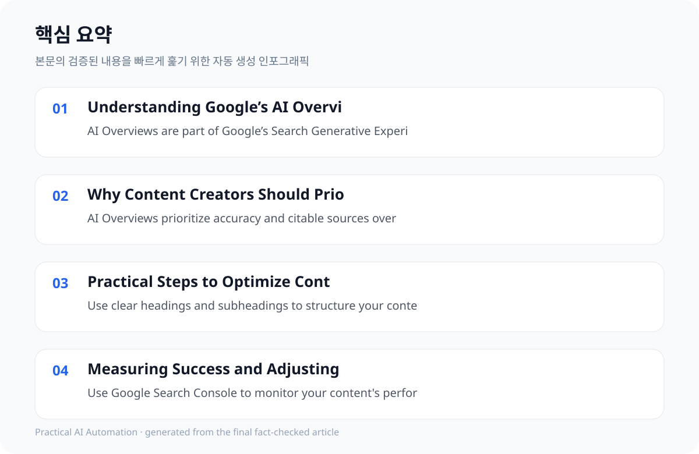

Understanding Google’s AI Overviews and Their Impact #
Google’s AI Overviews are AI-generated summaries of key information that appear at the top of search results. These overviews provide users with a quick, concise answer to their query, along with links for deeper exploration. As of 2024, AI Overviews are available in over 120 countries and 11 languages.
AI Overviews are designed to provide users with accurate and easily digestible information. The format is particularly beneficial for content creators aiming to reach a broad audience quickly. By prioritizing structured and citable content, creators can increase the likelihood of their work being featured in these overviews, driving more traffic to their websites.
Google’s AI Overviews represent a fundamental shift in how users engage with search, moving beyond simple keyword matching to a generative, conversational approach. These overviews are not merely summaries; they are synthesized answers, often incorporating multiple sources to provide a comprehensive response. This necessitates a new content strategy focused on providing authoritative, well-sourced information that can be readily incorporated into these AI-generated outputs.
Crucially, Google’s stated goal is to provide ‘accurate’ and ‘citable’ information. This directly impacts content creators, demanding a higher standard of factual correctness and a commitment to transparency through robust sourcing. The success of your content hinges on its ability to meet these criteria, as Google’s algorithms prioritize content that aligns with these principles.
- AI Overviews are part of Google’s Search Generative Experience (SGE), introduced in May 2023 and rebranded in May 2024.
- AI Overviews and featured snippets together occupy a significant portion of the screen on desktop (67.1%) and mobile (75.7%) – a key factor for content visibility.
- AI Overviews are currently in global rollout, with full availability expected by October 2024.
Why Content Creators Should Prioritize AI Overviews #
The shift towards AI Overviews is reshaping how users interact with search results. Content creators must adapt to ensure their content is both informative and citable. This shift aligns with Google’s focus on accuracy and structured information, which are key factors in ranking for AI Overviews.
Content that aligns with AI Overviews can significantly improve visibility and traffic.
Monetization through AdSense is more feasible with content that drives organic traffic from AI Overviews.
The competitive landscape is intensifying, with Google aggressively pushing AI Overviews. Content creators must proactively adapt to this new reality, shifting from a traditional SEO-centric approach to one that directly addresses the requirements of AI search. This means prioritizing structured data, clear explanations, and readily verifiable sources – essentially, creating content that *wants* to be cited by Google’s AI.
Furthermore, the potential for increased traffic through AI Overviews presents a significant monetization opportunity. However, this monetization is intrinsically linked to the visibility of your content within these overviews. A strong, authoritative presence in AI Overviews translates directly into increased AdSense revenue, making this a key driver for content strategy.
- AI Overviews prioritize accuracy and citable sources over traditional SEO techniques.
- Content creators need to balance speed and accuracy when optimizing for AI Overviews.
- The German ruling indicates legal liability for false claims in AI Overviews, increasing risk for content creators.
Practical Steps to Optimize Content for AI Overviews #
To optimize your content for AI Overviews, focus on creating structured, accurate, and citable information. This approach not only improves your chances of appearing in AI Overviews but also enhances the overall quality of your content.
One effective method to optimize for AI Overviews is to use clear headings and subheadings that reflect the main topics of your content. This helps AI systems quickly identify and summarize the key points. Additionally, incorporating bullet points and numbered lists can make your content more scannable and improve its chances of being included in AI Overviews.
To effectively optimize content for AI Overviews, a structured approach is paramount. Begin by identifying the core question or query that users are likely to pose. Then, develop a concise, authoritative answer that directly addresses this question, supported by a curated selection of credible sources. Employ schema markup to explicitly signal the structure of your content to Google’s AI, indicating that it’s suitable for inclusion in an overview.
Specifically, utilize clear headings and subheadings to logically organize your content, mirroring the structure of a typical AI-generated response. Incorporate bullet points and numbered lists to break down complex information into digestible segments. Always cite your sources prominently and accurately, providing links to the original content for users to explore further. Consider creating dedicated ‘citation pages’ that aggregate all sources related to a specific topic, further enhancing your content’s value to Google’s AI.
- Use clear headings and subheadings to structure your content.
- Include relevant keywords naturally within your content.
- Provide citations and references to support your claims.
- Ensure your content is well-organized and easy to navigate.
- Regularly update your content to maintain accuracy and relevance.

Measuring Success and Adjusting Your Strategy #
To determine if your content is ranking in AI Overviews, use tools like Google Search Console and third-party SEO platforms. These tools can help you track your content’s visibility and performance in search results.
In addition to using tools like Google Search Console, content creators can also leverage third-party SEO platforms such as Ahrefs or SEMrush to monitor their content's performance.
Continuously refine your content based on performance data and user feedback.
Measuring the success of your content in AI Overviews requires a multi-faceted approach. While Google Search Console provides valuable insights into overall search performance, it doesn’t specifically track AI Overview rankings. Supplement this data with third-party SEO tools like Ahrefs or SEMrush, which offer more granular metrics related to AI search visibility.
Crucially, monitor user engagement metrics – such as time on page, bounce rate, and click-through rates – to assess whether your content is effectively answering user queries and driving further exploration. Regularly analyze competitor content to identify best practices and opportunities for improvement. Adapt your strategy based on these insights, continuously refining your content to meet the evolving demands of Google’s AI.
- Use Google Search Console to monitor your content's performance in search results.
- Track keyword rankings and traffic sources to identify trends.
- Analyze competitor content to identify best practices and opportunities.
- Adjust your content strategy based on performance data and user feedback.
Challenges and Limitations #
While AI Overviews offer significant opportunities, challenges exist. These include the risk of inaccuracies, legal liability, and the evolving nature of AI Overviews.
Content creators must remain adaptable as AI Overviews continue to evolve.
The evolving nature of AI Overviews presents both challenges and opportunities for content creators. The risk of inaccuracies remains a significant concern, necessitating rigorous fact-checking and verification of all information. Furthermore, the legal implications of inaccurate claims, as highlighted by the German ruling, underscore the importance of responsible content creation and adherence to Google’s guidelines.
Content creators must remain adaptable and proactive, continuously monitoring Google’s updates and best practices. This includes staying informed about the latest developments in AI search technology and adjusting your content strategy accordingly. A flexible and iterative approach is essential for navigating this rapidly evolving landscape.
- AI Overviews are still evolving and may not be available in all regions or languages.
- Content creators must balance speed and accuracy when optimizing for AI Overviews.
- The German ruling indicates legal liability for false claims in AI Overviews, increasing risk for content creators.